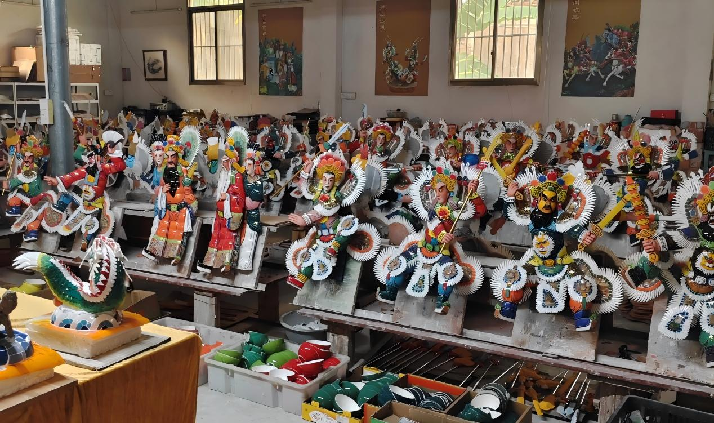
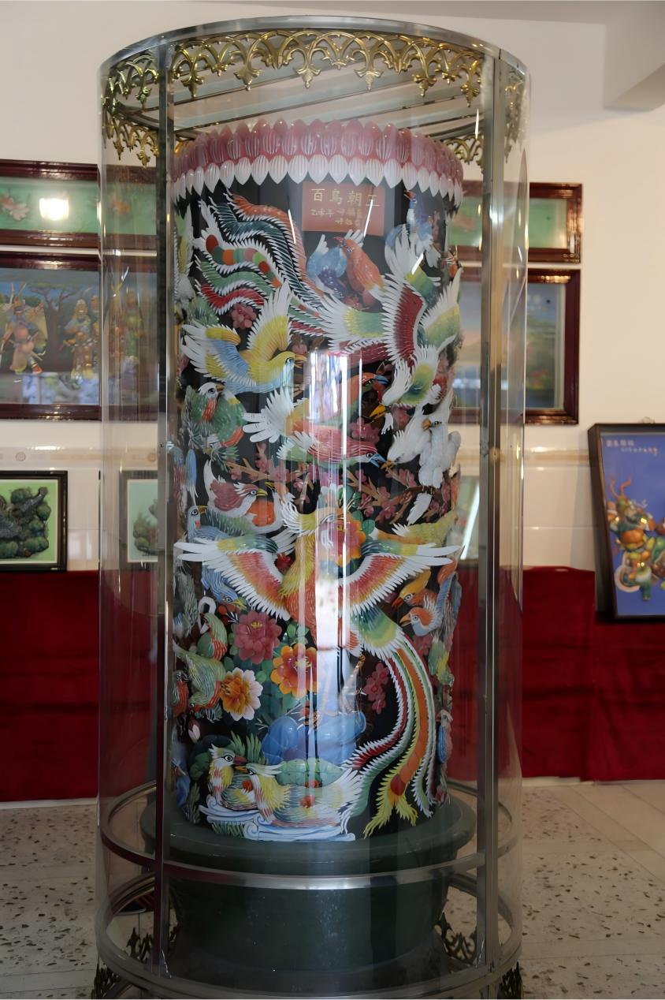
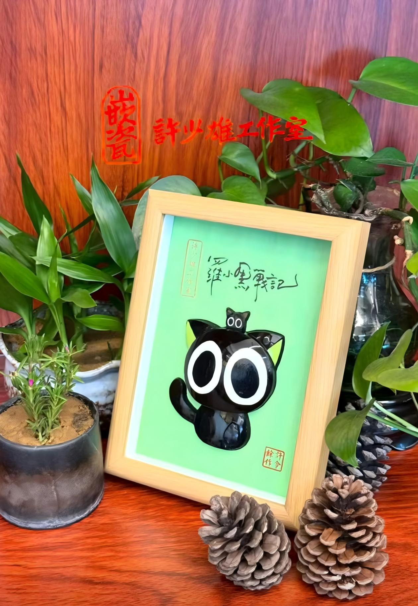

01. 缘起
惜材成艺，化腐朽为神奇
嵌瓷，俗称“贴饶”或“扣饶”，始于明末，盛于清代。彼时潮汕对外贸易繁荣，民间匠人不忍色彩斑斓的破损瓷片被弃，便将其粘贴于建筑之上。
这种“无意而为之”的举动，替代了易受海风侵蚀的泥塑，历经风雨烈日依旧鲜艳如新，故被誉为“永远亮丽的艺术”。

匠心独运，碎瓷重生
02. 技艺
厝角头有戏出
从屋脊的磅礴到屋角的细腻，嵌瓷是建筑的灵魂。

屋脊 · 气势磅礴
屋脊是核心区域，常饰以龙凤、麒麟。为适应仰视，特意设计前倾，色彩鲜艳，如“双麒麟朝日”，历经台风仍光彩熠熠。

屋角 · 立体戏文
“厝角头有戏出”。这里是立体的舞台，上演《封神榜》《三国》等忠义大戏。武将铠甲怒张，文官袍带飘逸，形神兼备。

檐下 · 抒情田园
采用“浮嵌”技法，多以松鹤、牡丹为题。一花一叶的弧度、一羽一翎的光泽，吟咏自然诗篇，寓意富贵锦绣。
03. 传承
大寮嵌瓷 · 匠心世家
汕头大寮村被誉为“嵌瓷之乡”。作为国家级非遗代表性传承人，许少雄从事嵌瓷三十余年。
其作品《张春郎削发》《秋曦》多次斩获国家级金奖。他不仅坚守传统内核，更让这门古老艺术适应现代社会，成为当代嵌瓷的中流砥柱。
04. 新生
从屋顶飞入百姓家
时代在变，嵌瓷也在变。传承人开启了从“屋顶”到“屋里”的变革，创作出挂屏、摆件，让艺术融入生活。
更有如《罗小黑》等文创产品，将古老工艺与二次元形象结合，为百年技艺注入了鲜活的青春活力。
